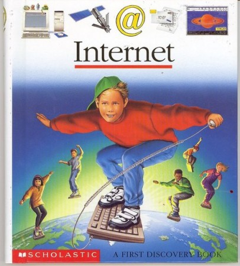

BLOG
article 1 :
c'est une vieille photo de cerfs courant dans la forêt la nuit. Cela me rappelle quand je suis allé dans cette maison à Seattle et que l'homme aux cerfs m'a suivi dans les escaliers - ils sont comme moi - pour voir si je voulais encore vivre. C'est alors que la sonnette retentit. Un instant . c'était probablement une ruse. Les cerfs peuvent être entraînés à marcher tranquillement et tranquillement. Vous ne pouvez pas ouvrir la porte d'entrée et vous les entendrez. Si vous deviez l'ouvrir, le cerf s'enfuirait. Peut-être n'arrivaient-ils pas à faire bouger le cerf, peut-être en avaient-ils peur. Je ne sais pas. Tout ce que je sais, c'est que c'est probablement une illusion. Quoi qu'il en soit, c'est ce qu'ils sont. Des créatures dans une dimension alternative... elles peuvent faire ça parfois... Celle-ci m'a simplement regardé d'un œil vide, puis a réduit la distance entre elles et moi et est entrée à l'intérieur. Quand je suis sorti, j'ai réalisé que l'homme était allé à sa voiture.
Je ne l'ai jamais revu. Donc je n'ai jamais su. Au point que pendant les premières semaines après que je les ai rencontrés pour la première fois, mes amis pensaient que j'étais devenu fou. Mon comportement était extrême et inexplicable. Comme voir un fantôme ou quelque chose comme ça.
Autocritique: c’est génial, peut-être faire un effort sur la syntaxe mais en vrai c’est à mi-chemin entre Steinbeck et Nietzsche en version moderne, genre youtubeur, tik-tok et tout ça. Avec le respect.
article 2 :
David habitait dans un des de 2 hlm de Clamecy en bourgogne. Dans sa chambre y’avait une batterie, de la moquette grise et du papier peint moche comme chez tout le monde, et aussi y’avait un ordi des 90s gens Amiga ou Amstrad, et des jeux qu’on savait pas trouver sur nes ou Sega, et des qui se jouaient avec le clavier ou un joystick de batard Pis là il a sorti un magazine en disant « regarde tu tape les lignes de codes et ça te fait un jeu » pis y’avait des photos du jeu, c’était un pioupiou vaisseau spatial qui tue des aliens. Ça présentait des perspectives folles sur ce que l’humain sait faire avec de la technologie. La 2e rencontre ct chez mon oncle, il habitait à Montreuil dans un loft trop stylé meublé en mode rocker, matelas par terre, une moto en pièce détachée, sofa motif zébré, grosse collec de vinyl et mega chaine hifi. Le gars était trop cool pour avoir une télé